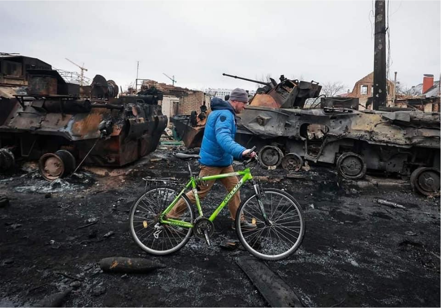

Діяльність Громадської організації «Портал Підтримки України» спрямована на підтримку суспільства та Збройних Сил України під час російської агресії проти України та після перемоги, на відновлення нашоЇ країни.
Маємо своє текстильне виробництво в Києві. Працюємо з укриттями, фондами, волонтерами, державними установами, ЗСУ та ТерОбороною.
Потребуємо:
Получатель (Ф.И.О. получателя счета латиницей) ANTOSHYNA KRYSTYNA 01001, Ukraine,city Kyiv, boulevard Druzhby Narodiv,building 3,Housing B,flat 12
UA543052990000026205731662098
Счет в банке получателя (номер пластиковой карты или текущий счет в ПриватБанке) 5168 7450 1741 2153
Банк получателя JSC CB PRIVATBANK, 1D HRUSHEVSKOHO STR., KYIV, 01001, UKRAINE SWIFT CODE/BIC: PBANUA2X
Счет банка получателя в банке-корреспонденте 623-160-5145
Банк-корреспондент J.P.MORGAN AG, FRANKFURT AM MAIN, GERMANY SWIFT CODE/BIC: CHASDEFX
EUR